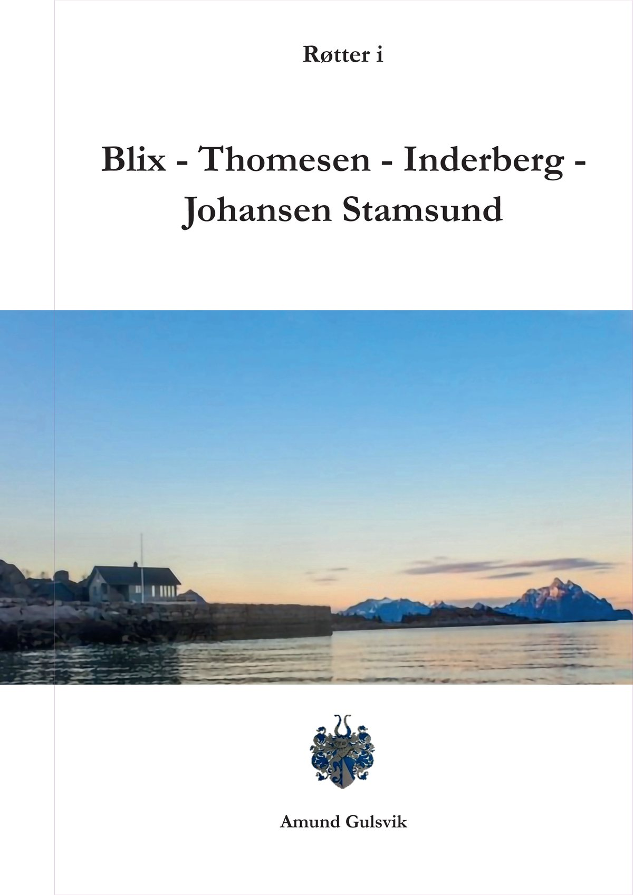
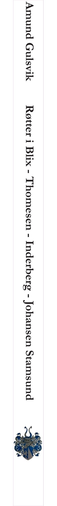
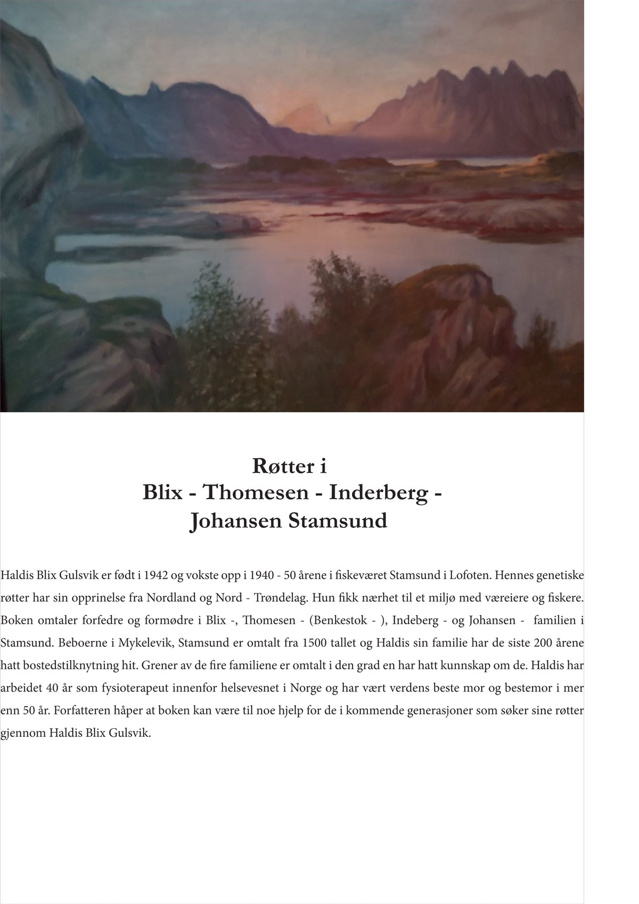
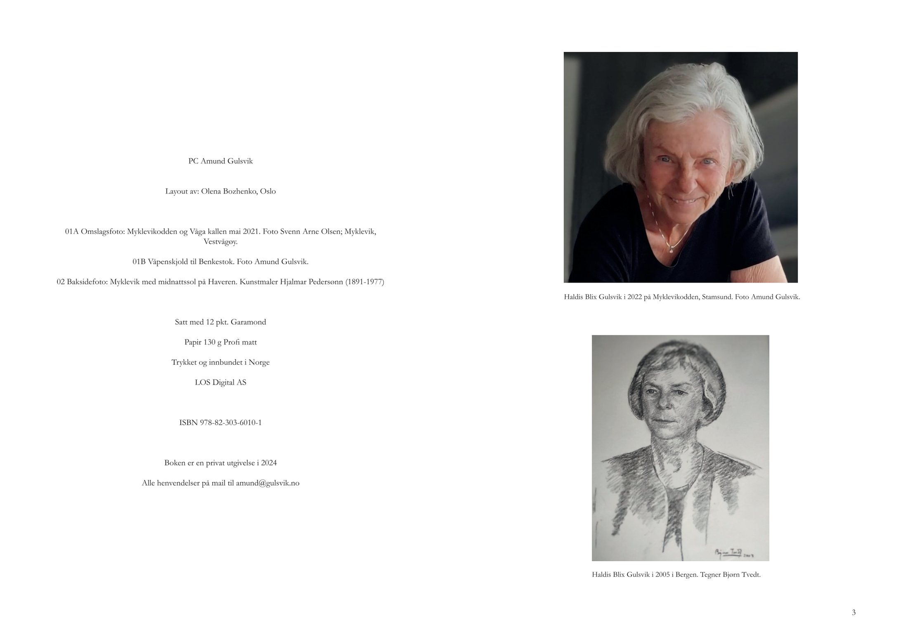
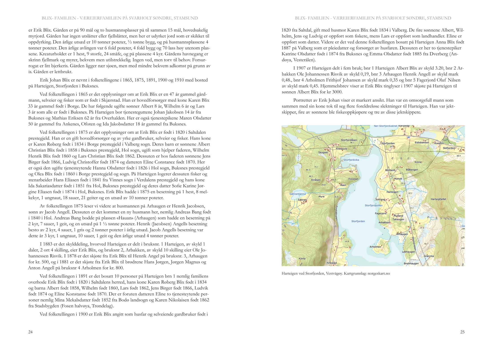
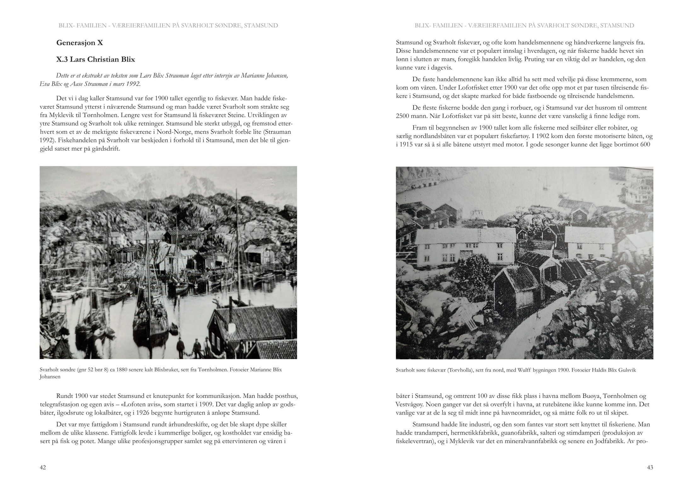
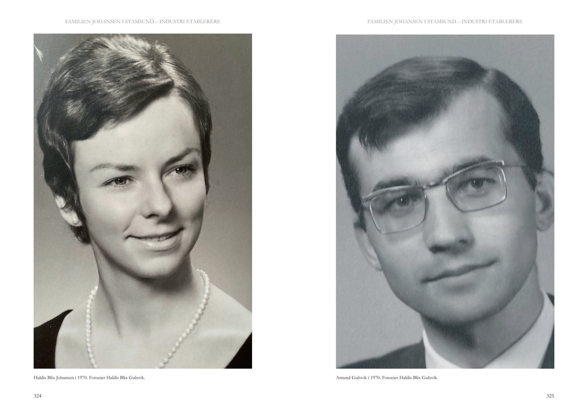
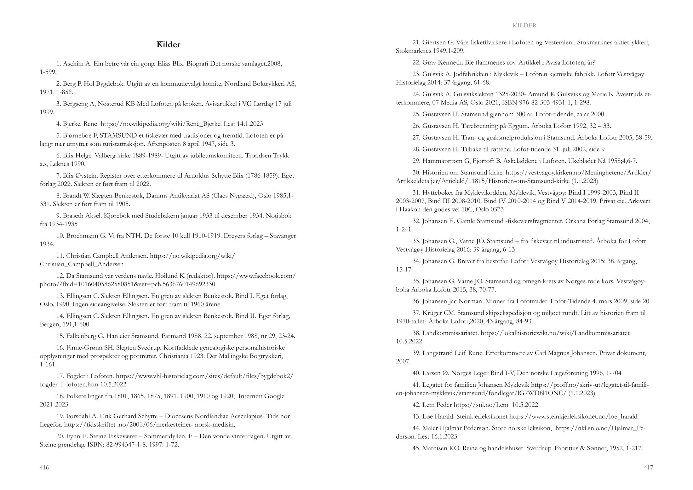

About
Røtter i Blix – Thomesen – Inderberg – Johansen Stamsund follows the families behind Haldis Blix Gulsvik, who grew up in the fishing village of Stamsund in Lofoten; the families are traced back to the 1500s. The author, Amund Gulsvik, gathered the family stories, archive photographs and maps, and wrote the book for the coming generations who look for their roots.
Objective
Turn a long family history, more than 300 archive photographs and maps, into a book that reads calmly from the title page to the list of sources, and prepare it for print.
“She has done the work on the book to our great satisfaction and with great accuracy.”
Spreads
8 of 216



